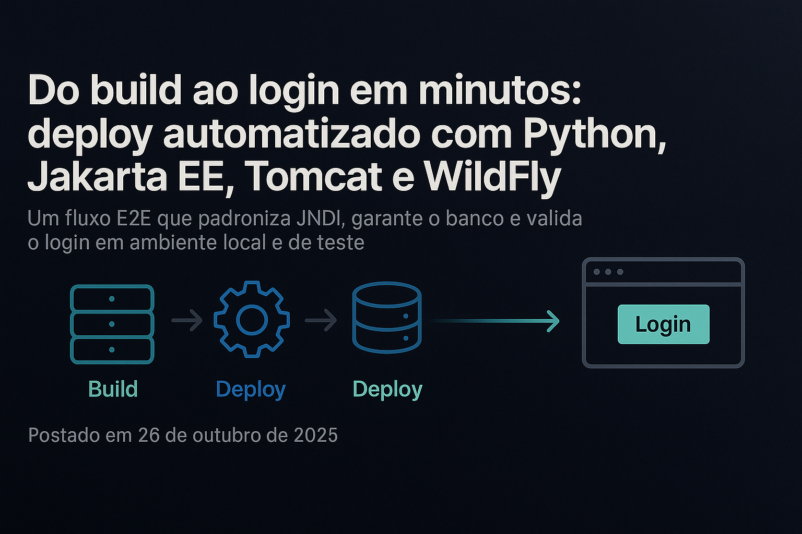
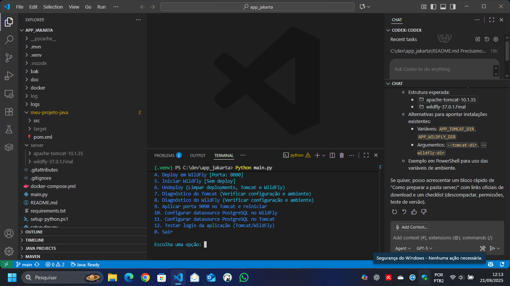

Do código ao valor em minutos: automação que acelera entregas e reduz riscos

Figura — Automação do build e deploy: do código ao valor com previsibilidade.
Empresas que lidam com aplicações corporativas costumam enfrentar o mesmo dilema: como transformar código em valor de negócio com rapidez e previsibilidade, sem aumentar riscos operacionais? Nosso time encarou esse desafio ao modernizar o fluxo de validação e publicação de uma aplicação Java baseada em Jakarta EE, rodando nos servidores de aplicação Tomcat e WildFly.
O resultado é um processo automatizado, simples de acionar, que reduz o esforço manual e encurta o tempo entre “desenvolver” e “comprovar que funciona”.
O desafio
Ambientes de desenvolvimento e teste historicamente sofrem com passos manuais: configurar servidor, preparar banco, publicar o artefato, checar se a aplicação subiu e se o login funciona. Esse ciclo, quando repetido por cada pessoa do time, gera inconsistências, retrabalho e atrasos.
A nossa resposta
Criamos um orquestrador leve em Python que padroniza o caminho “do build ao login”. Em um único fluxo:
- prepara o ambiente de banco de dados;
- compila a aplicação;
- publica nos servidores Tomcat e WildFly, respeitando as particularidades de cada um;
- confirma que a aplicação está de pé e que o login realmente funciona.
Tudo isso com logs claros e passos idempotentes, para que o mesmo comando funcione de forma confiável na sua máquina e no ambiente de testes.

Figura — Fluxo fim a fim: banco de dados, build, deploy e validação de login.
O que muda no dia a dia
- Menos atrito e menos passos manuais. O time deixa de “cuidar de servidor” para focar no que gera valor: produto e cliente.
- Feedback mais rápido. A verificação de “build + publicação + login” acontece em minutos e de forma repetível.
- Menos variabilidade entre máquinas. Padronização reduz “funciona aqui, mas não ali”.
- Diagnóstico mais objetivo. Quando algo falha, os logs mostram exatamente onde atuar.
Benefícios para o negócio
- Velocidade com governança: acelerar entregas sem abrir mão de controle e visibilidade.
- Qualidade percebida: a validação fim a fim (inclusive login) evita surpresas em demonstrações e testes de aceitação.
- Produtividade: menos tempo montando ambiente, mais tempo entregando valor.
- Redução de risco: processos padronizados diminuem erros operacionais e retrabalho.
Padronização que habilita escala
Publicar em Tomcat ou em WildFly sempre teve diferenças práticas. Nosso fluxo isola essas particularidades em um roteiro único e confiável, o que facilita treinar o time, reproduzir resultados e escalar as entregas com previsibilidade.
O que está pronto hoje
- Execução com um comando: build, publicação em Tomcat e WildFly e verificação de disponibilidade.
- Checagem de banco e credenciais de teste para garantir que “logar” funciona de ponta a ponta.
- Registro de evidências (logs) para auditoria e diagnóstico.
Como acionamos (menu simples)
Para o time, tudo acontece a partir de um menu único (main.py). É possível executar o fluxo completo em um passo (opção 12) ou rodar etapas específicas quando necessário.

Figura — Menu do orquestrador: opções de build, deploy e validação. A opção 12 executa o fluxo fim a fim.
Próximos passos
- Levar o mesmo fluxo para uma esteira de CI/CD de forma leve.
- Expor indicadores simples (tempo de ciclo, taxa de sucesso) para orientar decisões.
- Reforçar padrões que facilitem auditoria e compliance sem burocracia.
Convite
Se você busca reduzir o tempo entre código e valor, mantendo governança e qualidade, vamos conversar. Nosso objetivo é que qualquer pessoa do time consiga validar uma release com confiança — e que essa confiança se traduza em melhores experiências para clientes e áreas de negócio.
Saiba mais e acesse o código-fonte:
Do build ao login em minutos: nosso fluxo de deploy automatizado com Python, Jakarta EE, Tomcat e WildFly
Nos últimos meses, investimos tempo para tornar o ciclo “build → deploy → validar” do nosso projeto Java com Jakarta EE não apenas mais rápido, mas também previsível, reprodutível e confiável em ambientes de desenvolvimento e teste. O resultado é um orquestrador em Python (main.py) que, com um único comando, faz o build do WAR, configura datasources por servidor, executa deploy “frio” no Tomcat e “quente” no WildFly, garante o banco de dados no ar e valida o login da aplicação tanto por HTTP quanto via navegador headless.
Publicaremos este relato no dia 26 de outubro de 2025 porque acreditamos que automatizar o caminho “da estação de trabalho ao servidor de aplicação” é a forma mais direta de reduzir atrito entre código e feedback, acelerar iterações e aumentar a qualidade.
Por que construímos esse orquestrador
- Reduzir tempo de setup e diagnóstico para cada desenvolvedor.
- Padronizar deployment entre Tomcat e WildFly, respeitando as particularidades de cada um.
- Validar a aplicação de ponta a ponta, desde JNDI até autenticação, em um único fluxo não interativo (ideal para ambientes de teste).
- Eliminar “falsos verdes”: não basta compilar, precisamos garantir que “logar” funciona.
O coração do projeto: main.py
Nosso script principal é uma CLI que entende o contexto do projeto e executa operações idempotentes. Um destaque especial é a opção 12 (E2E):
- Para servidores antes de começar — Agora a opção 12 inicia parando Tomcat e WildFly se estiverem rodando, garantindo estado limpo.
- Garante banco de dados disponível (PostgreSQL via Docker Compose) — Faz health-check e aplica seed do usuário ADMIN para testes.
- Build consistente do WAR — Executa Maven com
clean package -DskipTestse valida a saída. - Deploy por servidor, respeitando o perfil de cada um — Tomcat: cold deploy (parar, limpar e subir com WAR novo). WildFly: hot deploy (scanner de
deploymentsreprocessa o artefato). - JNDI confiável e portável — Tomcat usa
java:comp/env/jdbc/PostgresDS(Resource emconf/context.xml, com DBCP do próprio Tomcat). WildFly usajava:/jdbc/PostgresDS(datasource nostandalone.xml+ driver no móduloorg.postgresql). - Validação real de login — Primeiro tenta navegação real com Playwright (headless). Fallback HTTP robusto (form discovery simples + variações de parâmetros).
- Logs e diagnósticos — Log diário com nome padrão
YYYY_MM_DD_nome.log. Heurísticas de logs do container para detectar bind do JNDI ou falhas de driver. Validação HTTP opcional de “status JNDI/DB”, se a app expõe algum endpoint de saúde.
Decisões técnicas que fizeram a diferença
- Context path padronizado dentro do WAR — Usamos
META-INF/context.xmlpara declarar o caminho da aplicação, garantindo consistência entre os servidores. - JNDI por container, sem gambiarras — WildFly:
java:/jdbc/PostgresDS(non-jta-data-source empersistence.xml). Tomcat:java:comp/env/jdbc/PostgresDScomResourceeresource-refapropriados. - Datasource Tomcat com a factory certa — A factory confiável é a do Tomcat:
org.apache.tomcat.dbcp.dbcp2.BasicDataSourceFactory. - Login realmente testável (e previsível) — Padronizamos BCrypt para
$2a$(compatível com jBCrypt) e normalizamos hashes$2b$/$2y$existentes, evitando incompatibilidades silenciosas. - Deploys mais seguros — Cold deploy no Tomcat evita “deployment a quente” incompleto. Reinício do WildFly quando mexemos no
standalone.xmlou nos módulos, garantindo que a nova config seja aplicada.
Experiência do desenvolvedor
Tudo converge na opção 12: uma execução não interativa que faz o “fim a fim” e termina dizendo, com evidências, se seu build realmente subiu e logou. É o tipo de feedback que elimina idas e vindas manuais, e dá confiança para focar no que importa: evolução do produto.
YYYY_MM_DD_nome.log) e os logs do container (bind de JNDI/driver). Eles mostram exatamente onde atuar.Principais checks feitos automaticamente:
- Docker Compose presente e PostgreSQL no ar.
- ADMIN de teste assegurado no banco (com hash compatível com jBCrypt).
- WAR gerado e implantado.
- JNDI OK em cada servidor (estático e em runtime, via logs).
- Login validado em navegador e HTTP com redirecionamento para
/dashboard.
Uma rotina que evita quedas de produtividade
Se você já perdeu tempo porque:
- o datasource não “bindou” no Tomcat por causa de uma factory errada,
- o WildFly subiu com um módulo de driver incompleto,
- o WAR foi “implantado” mas a app não respondeu em
/login, - ou o hash de senha não bateu por uma sutileza do algoritmo,
…então sabe a importância de um fluxo que antecipa e resolve esses problemas por você. Nosso script trata esses pontos e loga o suficiente para diagnosticar em minutos.
O que vem a seguir
- CI leve (GitHub Actions) para rodar a opção 12 em um runner self-hosted de teste.
- Parâmetros de ambiente padronizados para ambientes múltiplos (DEV/QA/UAT).
- Health endpoints opcionais na app para JNDI/DB, expondo status interpretável.
- Empacotamento com Docker para ambientes “clean-room”.
- SSL/HTTPS local assistido e testes de conteúdo com Playwright mais ricos.
Principais aprendizados
- Automatizar o “último quilômetro” do deploy local testa muito mais do que o build; testa o que o usuário final realmente vive.
- Pequenos detalhes (ex.: prefixo do BCrypt, factory do DBCP no Tomcat) têm impacto desproporcional quando não tratados.
- Ferramentas simples e estáveis (Python + requests + Playwright + Maven) são suficientes para orquestrar um setup multiplataforma com excelência.
Agradecimentos e convite
Esse trabalho nasce da colaboração entre quem desenvolve, opera e testa. Se este fluxo te inspirou, vamos trocar ideias sobre como levar essa automação para o seu contexto—seja unificando sua esteira de deploy local, suas validações de ambiente ou seus smoke tests.
- Quer ver como padronizar JNDI entre Tomcat e WildFly no seu projeto?
- Precisa acelerar o “tempo até o primeiro login” do seu time?
- Está pensando em transformar esse fluxo em um job de CI?
Me chame. Adoro falar sobre isso.
Hashtags: #JakartaEE #Tomcat #WildFly #Java #Python #DevOps #Automation #PostgreSQL #Playwright #DX #DeveloperExperience #E2E #Quality #Testing